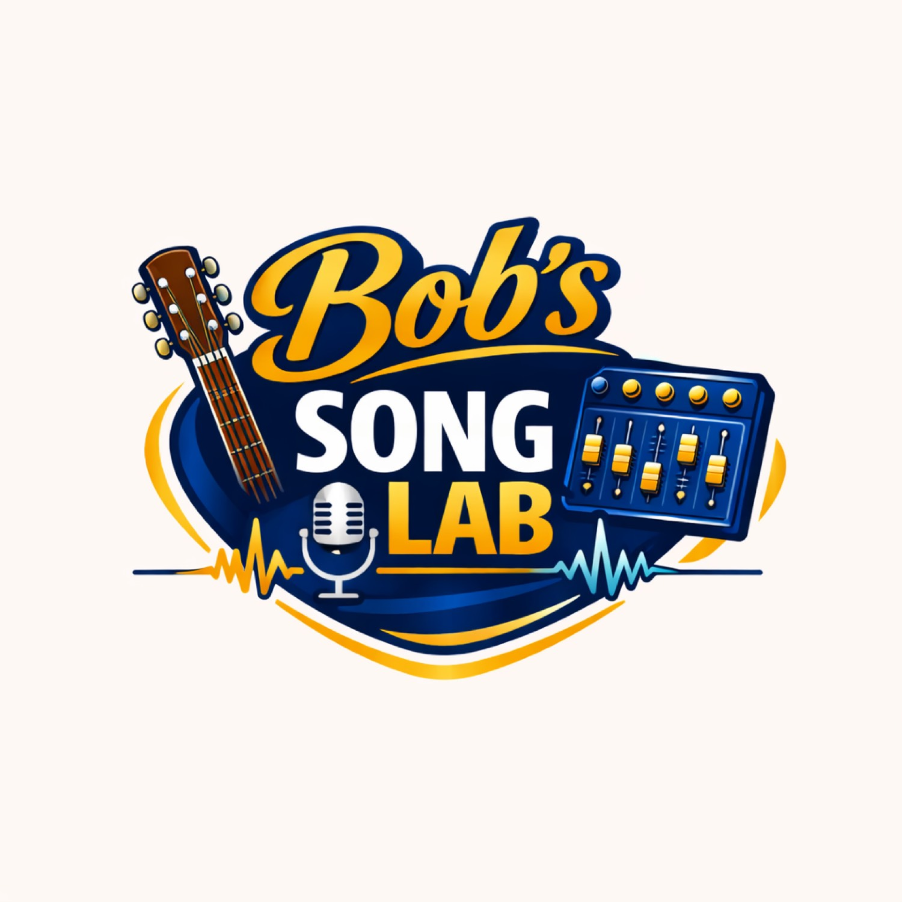
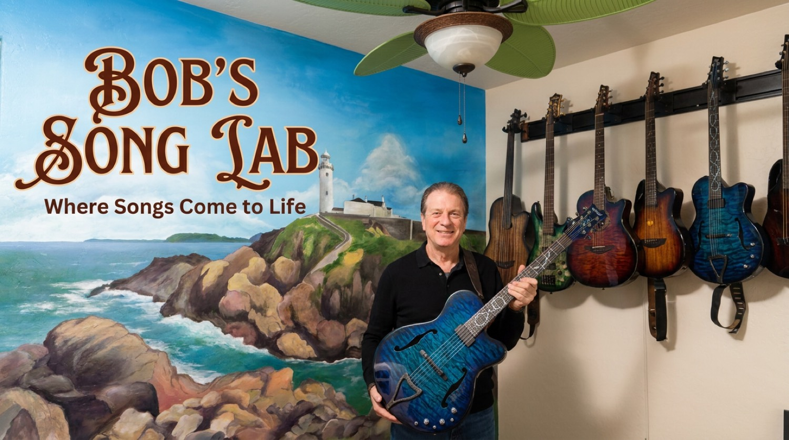
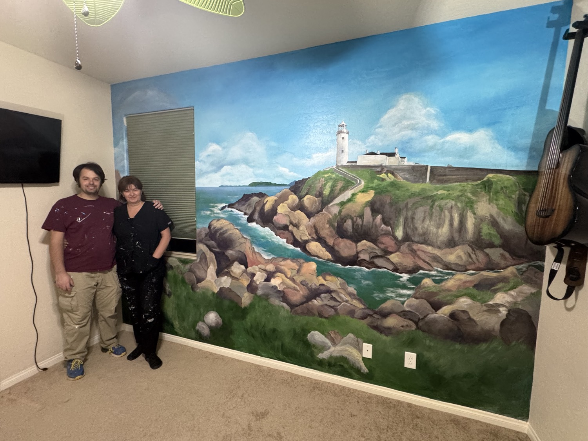
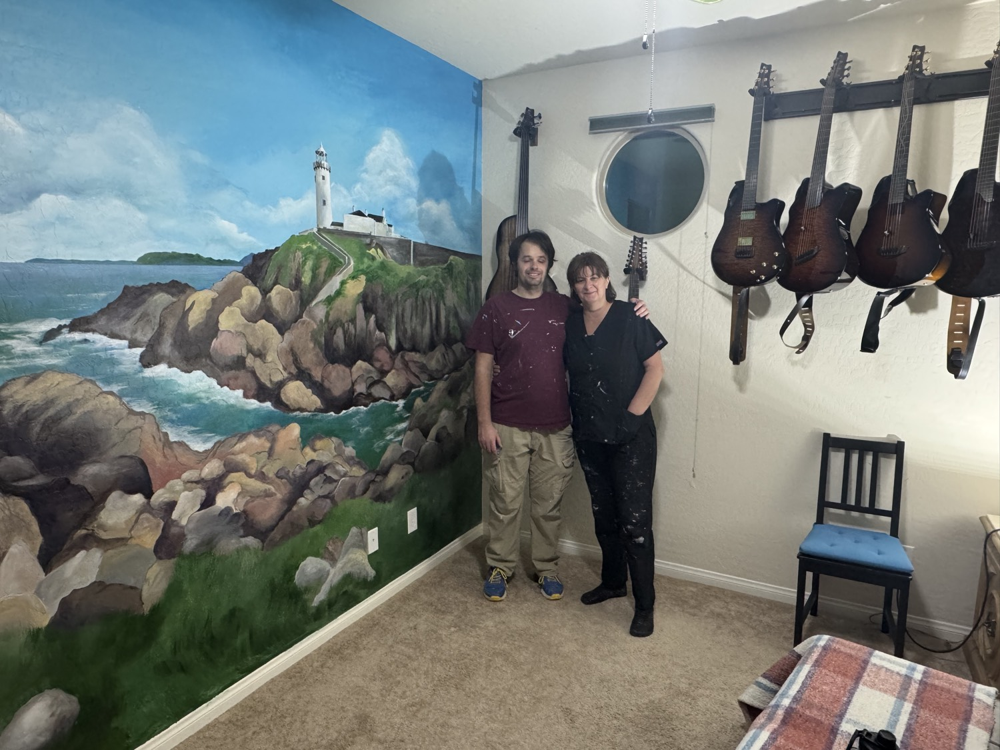
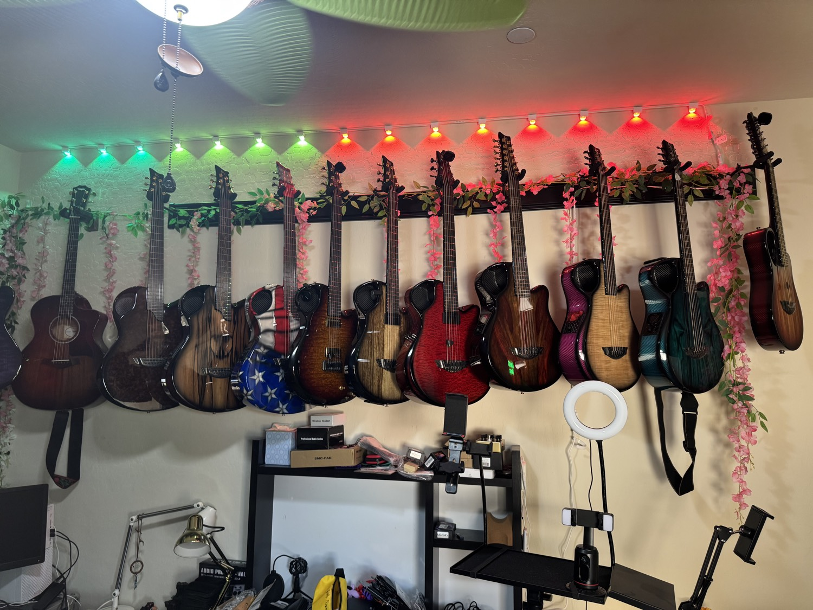

1. Spark
Get unstuck. 14,000 seeds with Nashville, capo, and tuning. Copy the one you like into Notes.
Open Idea Spark →
Where Songs Come to Life

Helping inspired songwriters bring their music to the world.
Free phone-first tools for people who write songs — not for people who rip other people’s songs. Bring a hum, a poem, or a guitar.
Your music only. We never fetch or split someone else’s record.
Get unstuck. 14,000 seeds with Nashville, capo, and tuning. Copy the one you like into Notes.
Open Idea Spark →Name, five places on the neck, typical key, mode, and neighbor chords. Tap a name in Spark to open the shape.
Open Chord Reference →Metaphors, similes, sayings, slang. Search by topic, word, feeling, or lesson. Copy the line into Notes.
Open Word Spark →Tune, click, capo, Drop D, Open G. Same travel-guitar and Lab-wall workflow you see on camera.
Watch: History of Alternate Tunings →Hook lines, structure cards, and a Notes-ready block so the idea survives the rest of the day.
Watch: Bucket List →Your idea or your own recording → chord chart, Nashville, simple rhythm tab. Your song only.
Watch: Masterpiece →Upload or record your demo. Hear voice apart from guitar. No YouTube links. No other people’s tracks.
Watch: Nova Go Sonic →DistroKid checklist, title block, YouTube description. Then the #MyFirstSong wall.
Go to the channel →This mural is the brand. A real lighthouse on a real cliff, painted in the Lab so every song has a place to land.



Phone, ideas, guitar, Suno, DistroKid. No studio required — though the Lab wall is real. Fifty years of writing from the heart, handed to you as tools.
Gear on the bench: Sonicake QGT-01 review →